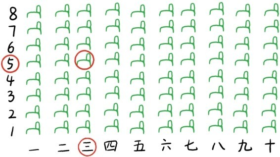
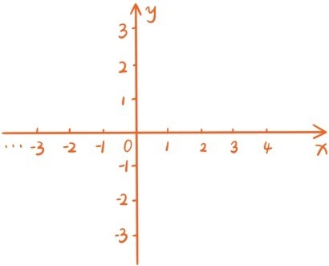
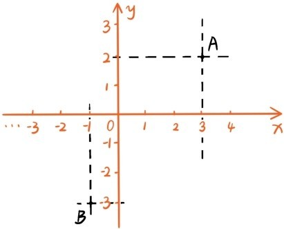
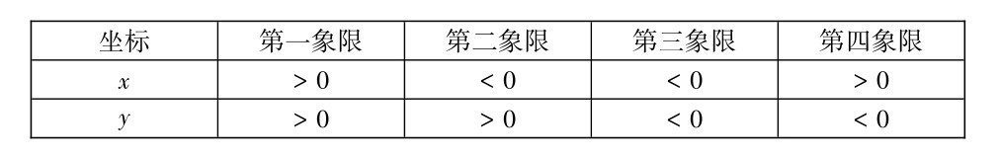
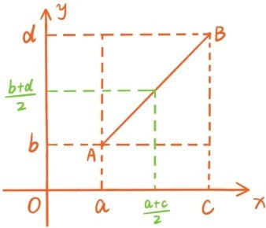

在第一章讲过，实数可以与数轴上的点建立完整的一一对应关系，所有实数同时加上一个固定的实数相当于是对数轴做平移变换，同时乘以一个固定的正实数相当于是对数轴做保持原点不动的均匀伸缩变换，同时乘以-1相当于是让数轴绕原点旋转180°。我们称数轴上的点所对应的实数为点的坐标。既然实数可以表示一条直线上的所有点，那用什么样的数据可以表示一个平面上所有的点呢？
当你拿着一张电影票走入影院的时候，如下图所示

你凭着电影票上写的三排5座很快就可以找到你的观影位置。这种用(三，5)标注观影位置的方式就启发我们在平面上画两条互相垂直的，原点重合的数轴，分别称为x轴与y轴。这样的两条数轴就构成了一个平面直角坐标系，这时平面称为坐标平面。

给定平面上任何一点后，分别过这个点作x轴与y轴的垂线，x轴上的垂足坐标称为这个点的x坐标，y轴上的垂足坐标称为这个点的y坐标，x坐标与y坐标构成的有序实数对就称为这个点的坐标。下图点A的x坐标与y坐标分别是3和2，坐标是(3，2)，点B的坐标是(-1,-3)。

反过来，每个坐标也可以确定平面上的一个点，例如给定坐标(-3，5)，过x轴上-3这个点作x轴的垂线，过y轴上5这个点作y轴的垂线，这两条垂线的交点的坐标正是(-3，5)。
在直角坐标系下，平面上的点与有序实数对(x,y)可以建立起一一对应的关系。x轴上的点正是那些y坐标为0的点，同样地，y轴上的点正是那些x坐标为0的点。x轴与y轴将整个平面分成4个部分，分别称为第一象限，第二象限，第三象限，第四象限。下面表格给出各个象限的点的坐标符号特征：

给定平面上两个点A(a,b)，B(c,d)，根据勾股定理，

另外，利用平行线分线段成比例定理，还可以得到AB的中点坐标为。
提问时间
5.1.1 标出坐标平面上两个点A(-3，1)和B(1,-2)的位置，并计算线段AB的长度和中点的坐标。
5.1.2 已知坐标平面上两点A和B的坐标分别是(1，2)和(4,-1)，C是线段AB上的一个点，AC=2BC，求C点的坐标。
5.1.3 请判断坐标平面上三点A(2，1)，B(3，0)和C(5,-2)是否在同一条直线上。
5.1.4 请证明坐标平面上三点A(1，2)，B(3，1)和C(0,-5)及其连线构成一个直角三角形。